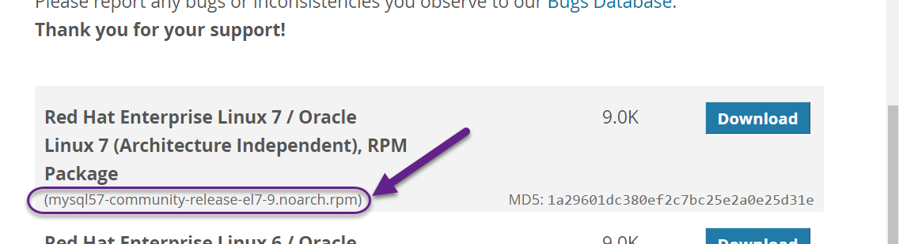
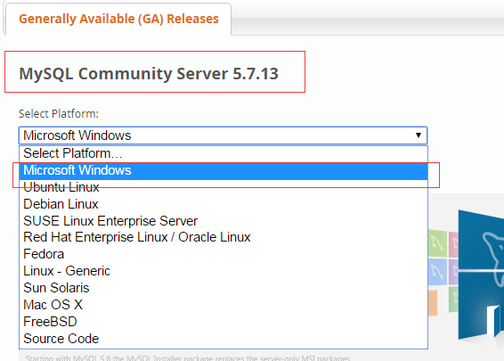
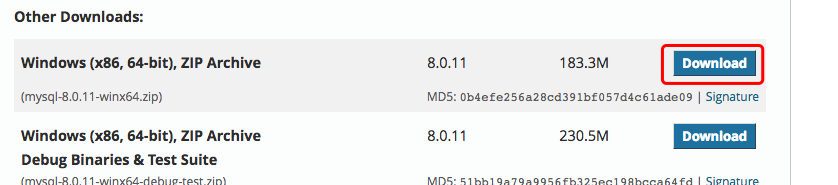

第一章：基础知识
1. MySQL 安装
所有平台的 MySQL 下载地址为： MySQL 下载 。 挑选你需要的 MySQL Community Server 版本及对应的平台。
注意：安装过程我们需要通过开启管理员权限来安装，否则会由于权限不足导致无法安装。
1.1 Linux/UNIX 上安装 MySQL
Linux平台上推荐使用RPM包来安装Mysql,MySQL AB提供了以下RPM包的下载地址：
MySQL - MySQL服务器。你需要该选项，除非你只想连接运行在另一台机器上的MySQL服务器。
MySQL-client - MySQL 客户端程序，用于连接并操作Mysql服务器。
MySQL-devel - 库和包含文件，如果你想要编译其它MySQL客户端，例如Perl模块，则需要安装该RPM包。
MySQL-shared - 该软件包包含某些语言和应用程序需要动态装载的共享库(libmysqlclient.so*)，使用MySQL。
MySQL-bench - MySQL数据库服务器的基准和性能测试工具。
安装前，我们可以检测系统是否自带安装 MySQL:
rpm -qa | grep mysql
如果你系统有安装，那可以选择进行卸载:
rpm -e mysql // 普通删除模式
rpm -e --nodeps mysql // 强力删除模式，如果使用上面命令删除时，提示有依赖的其它文件，则用该命令可以对其进行强力删除
1.1.1 安装 MySQL
接下来我们在 Centos7 系统下使用 yum 命令安装 MySQL，需要注意的是 CentOS 7 版本中 MySQL数据库已从默认的程序列表中移除，所以在安装前我们需要先去官网下载 Yum 资源包，下载地址为：https://dev.mysql.com/downloads/repo/yum/

wget http://repo.mysql.com/mysql-community-release-el7-5.noarch.rpm
rpm -ivh mysql-community-release-el7-5.noarch.rpm
yum update
yum install mysql-server
权限设置：
chown mysql:mysql -R /var/lib/mysql
初始化 MySQL：
mysqld --initialize
启动 MySQL：
systemctl start mysqld
查看 MySQL 运行状态：
systemctl status mysqld
注意：如果我们是第一次启动 mysql 服务，mysql 服务器首先会进行初始化的配置。
此外,你也可以使用 MariaDB 代替，MariaDB 数据库管理系统是 MySQL 的一个分支，主要由开源社区在维护，采用 GPL 授权许可。开发这个分支的原因之一是：甲骨文公司收购了 MySQL 后，有将 MySQL 闭源的潜在风险，因此社区采用分支的方式来避开这个风险。
MariaDB的目的是完全兼容MySQL，包括API和命令行，使之能轻松成为MySQL的代替品。
yum install mariadb-server mariadb
mariadb数据库的相关命令是：
systemctl start mariadb #启动MariaDB
systemctl stop mariadb #停止MariaDB
systemctl restart mariadb #重启MariaDB
systemctl enable mariadb #设置开机启动
1.1.2 验证 MySQL 安装
在成功安装 MySQL 后，一些基础表会表初始化，在服务器启动后，你可以通过简单的测试来验证 MySQL 是否工作正常。
使用 mysqladmin 工具来获取服务器状态：
使用 mysqladmin 命令来检查服务器的版本, 在 linux 上该二进制文件位于 /usr/bin 目录，在 Windows 上该二进制文件位于C:\mysql\bin 。
[root@host]# mysqladmin --version
linux上该命令将输出以下结果，该结果基于你的系统信息：
mysqladmin Ver 8.23 Distrib 5.0.9-0, for redhat-linux-gnu on i386
如果以上命令执行后未输出任何信息，说明你的Mysql未安装成功。
1.1.3 使用 MySQL Client(Mysql客户端) 执行简单的SQL命令
你可以在 MySQL Client(Mysql客户端) 使用 mysql 命令连接到 MySQL 服务器上，默认情况下 MySQL 服务器的登录密码为空，所以本实例不需要输入密码。
命令如下：
[root@host]# mysql
以上命令执行后会输出 mysql>提示符，这说明你已经成功连接到Mysql服务器上，你可以在 mysql> 提示符执行SQL命令：
mysql> SHOW DATABASES;
+----------+
| Database |
+----------+
| mysql |
| test |
+----------+
2 rows in set (0.13 sec)
1.1.4 Mysql安装后需要做的
Mysql安装成功后，默认的root用户密码为空，你可以使用以下命令来创建root用户的密码：
[root@host]# mysqladmin -u root password "new_password";
现在你可以通过以下命令来连接到Mysql服务器：
[root@host]# mysql -u root -p
Enter password:*******
注意：在输入密码时，密码是不会显示了，你正确输入即可。
1.2 Windows 上安装 MySQL
1.2.1 下载Mysql
Windows 上安装 MySQL 相对来说会较为简单，点击链接 https://cdn.mysql.com//Downloads/MySQL-8.0/mysql-8.0.11-winx64.zip 下载 zip 包。
最新版本可以在 MySQL 下载 中下载中查看。


点击 DownloadNo thanks, just start my download.

1.2.2 安装MySQL
下载完后，我们将 zip 包解压到相应的目录，这里我将解压后的文件夹放在 C:\web\mysql-8.0.11 下。
接下来我们需要配置下 MySQL 的配置文件
打开刚刚解压的文件夹 C:\web\mysql-8.0.11 ，在该文件夹下创建 my.ini 配置文件，编辑 my.ini 配置以下基本信息：
[client]
# 设置mysql客户端默认字符集
default-character-set=utf8
[mysqld]
# 设置3306端口
port = 3306
# 设置mysql的安装目录
basedir=C:\\web\\mysql-8.0.11
# 设置 mysql数据库的数据的存放目录，MySQL 8+ 不需要以下配置，系统自己生成即可，否则有可能报错
# datadir=C:\\web\\sqldata
# 允许最大连接数
max_connections=20
# 服务端使用的字符集默认为8比特编码的latin1字符集
character-set-server=utf8
# 创建新表时将使用的默认存储引擎
default-storage-engine=INNODB
接下来我们来启动下 MySQL 数据库
以管理员身份打开 cmd 命令行工具，切换目录：
cd C:\web\mysql-8.0.11\bin
初始化数据库：
mysqld --initialize --console
执行完成后，会输出 root 用户的初始默认密码，如：
...
2018-04-20T02:35:05.464644Z 5 [Note] [MY-010454] [Server] A temporary password is generated for root@localhost: APWCY5ws&hjQ
...
APWCY5ws&hjQ 就是初始密码，后续登录需要用到，你也可以在登陆后修改密码。
输入以下安装命令：
mysqld install
启动输入以下命令即可：
net start mysql
注意: 在 5.7 需要初始化 data 目录：
cd C:\web\mysql-8.0.11\bin
mysqld --initialize-insecure
初始化后再运行 net start mysql 即可启动 mysql。
1.2.3 登录 MySQL
当 MySQL 服务已经运行时, 我们可以通过 MySQL 自带的客户端工具登录到 MySQL 数据库中, 首先打开命令提示符, 输入以下格式的命名:
mysql -h 主机名 -u 用户名 -p
参数说明：
- -h : 指定客户端所要登录的 MySQL 主机名, 登录本机(localhost 或 127.0.0.1)该参数可以省略;
- -u : 登录的用户名;
-p : 告诉服务器将会使用一个密码来登录, 如果所要登录的用户名密码为空, 可以忽略此选项。
如果我们要登录本机的 MySQL 数据库，只需要输入以下命令即可：
mysql -u root -p
按回车确认, 如果安装正确且 MySQL 正在运行, 会得到以下响应:
Enter password:
若密码存在, 输入密码登录, 不存在则直接按回车登录。登录成功后你将会看到 Welcome to the MySQL monitor... 的提示语。
然后命令提示符会一直以 mysq> 加一个闪烁的光标等待命令的输入, 输入 exit 或 quit 退出登录。
2. MySQL 管理
2.1 启动及关闭 MySQL 服务器
2.1.1 Windows 系统下
在 Windows 系统下，打开命令窗口(cmd)，进入 MySQL 安装目录的 bin 目录。
启动：
cd c:/mysql/bin
mysqld --console
关闭：
cd c:/mysql/bin
mysqladmin -uroot shutdown
2.1.2 Linux 系统下
首先，我们需要通过以下命令来检查MySQL服务器是否启动：
ps -ef | grep mysqld
如果MySQL已经启动，以上命令将输出mysql进程列表， 如果mysql未启动，你可以使用以下命令来启动mysql服务器:
root@host# cd /usr/bin
./mysqld_safe &
如果你想关闭目前运行的 MySQL 服务器, 你可以执行以下命令:
root@host# cd /usr/bin
./mysqladmin -u root -p shutdown
Enter password: ******
2.2 MySQL 用户设置
如果你需要添加 MySQL 用户，你只需要在 mysql 数据库中的 user 表添加新用户即可。
以下为添加用户的的实例，用户名为guest，密码为guest123，并授权用户可进行 SELECT, INSERT 和 UPDATE操作权限：
root@host# mysql -u root -p
Enter password:*******
mysql> use mysql;
Database changed
mysql> INSERT INTO user
(host, user, password,
select_priv, insert_priv, update_priv)
VALUES ('localhost', 'guest',
PASSWORD('guest123'), 'Y', 'Y', 'Y');
Query OK, 1 row affected (0.20 sec)
mysql> FLUSH PRIVILEGES;
Query OK, 1 row affected (0.01 sec)
mysql> SELECT host, user, password FROM user WHERE user = 'guest';
+-----------+---------+------------------+
| host | user | password |
+-----------+---------+------------------+
| localhost | guest | 6f8c114b58f2ce9e |
+-----------+---------+------------------+
1 row in set (0.00 sec)
在添加用户时，请注意使用MySQL提供的 PASSWORD() 函数来对密码进行加密。 你可以在以上实例看到用户密码加密后为： 6f8c114b58f2ce9e.
注意：在 MySQL5.7 中 user 表的 password 已换成了authentication_string。
注意：password() 加密函数已经在 8.0.11 中移除了，可以使用 MD5() 函数代替。
注意：在注意需要执行 FLUSH PRIVILEGES 语句。 这个命令执行后会重新载入授权表。
如果你不使用该命令，你就无法使用新创建的用户来连接mysql服务器，除非你重启mysql服务器。
你可以在创建用户时，为用户指定权限，在对应的权限列中，在插入语句中设置为 'Y' 即可，用户权限列表如下：
- Select_priv
- Insert_priv
- Update_priv
- Delete_priv
- Create_priv
- Drop_priv
- Reload_priv
- Shutdown_priv
- Process_priv
- File_priv
- Grant_priv
- References_priv
- Index_priv
- Alter_priv
另外一种添加用户的方法为通过SQL的 GRANT 命令，以下命令会给指定数据库TUTORIALS添加用户 zara ，密码为 zara123 。
root@host# mysql -u root -p
Enter password:*******
mysql> use mysql;
Database changed
mysql> GRANT SELECT,INSERT,UPDATE,DELETE,CREATE,DROP
-> ON TUTORIALS.*
-> TO 'zara'@'localhost'
-> IDENTIFIED BY 'zara123';
以上命令会在mysql数据库中的user表创建一条用户信息记录。
注意: MySQL 的SQL语句以分号 (;) 作为结束标识。
2.3 /etc/my.cnf 文件配置
一般情况下，你不需要修改该配置文件，该文件默认配置如下：
[mysqld]
datadir=/var/lib/mysql
socket=/var/lib/mysql/mysql.sock
[mysql.server]
user=mysql
basedir=/var/lib
[safe_mysqld]
err-log=/var/log/mysqld.log
pid-file=/var/run/mysqld/mysqld.pid
在配置文件中，你可以指定不同的错误日志文件存放的目录，一般你不需要改动这些配置。
2.4 管理MySQL的命令
以下列出了使用Mysql数据库过程中常用的命令：
USE 数据库名 : 选择要操作的MySQL数据库，使用该命令后所有MySQL命令都只针对该数据库。
mysql> use RUNOOB; Database changedSHOW DATABASES: 列出 MySQL 数据库管理系统的数据库列表。
mysql> SHOW DATABASES; +--------------------+ | Database | +--------------------+ | information_schema | | RUNOOB | | cdcol | | mysql | | onethink | | performance_schema | | phpmyadmin | | test | | wecenter | | wordpress | +--------------------+ 10 rows in set (0.02 sec)SHOW TABLES: 显示指定数据库的所有表，使用该命令前需要使用 use 命令来选择要操作的数据库。
mysql> use RUNOOB; Database changed mysql> SHOW TABLES; +------------------+ | Tables_in_runoob | +------------------+ | employee_tbl | | runoob_tbl | | tcount_tbl | +------------------+ 3 rows in set (0.00 sec)SHOW COLUMNS FROM 数据表: 显示数据表的属性，属性类型，主键信息 ，是否为 NULL，默认值等其他信息。
mysql> SHOW COLUMNS FROM runoob_tbl; +-----------------+--------------+------+-----+---------+-------+ | Field | Type | Null | Key | Default | Extra | +-----------------+--------------+------+-----+---------+-------+ | runoob_id | int(11) | NO | PRI | NULL | | | runoob_title | varchar(255) | YES | | NULL | | | runoob_author | varchar(255) | YES | | NULL | | | submission_date | date | YES | | NULL | | +-----------------+--------------+------+-----+---------+-------+ 4 rows in set (0.01 sec)SHOW INDEX FROM 数据表: 显示数据表的详细索引信息，包括PRIMARY KEY（主键）。
mysql> SHOW INDEX FROM runoob_tbl; +------------+------------+----------+--------------+-------------+-----------+-------------+----------+--------+------+------------+---------+---------------+ | Table | Non_unique | Key_name | Seq_in_index | Column_name | Collation | Cardinality | Sub_part | Packed | Null | Index_type | Comment | Index_comment | +------------+------------+----------+--------------+-------------+-----------+-------------+----------+--------+------+------------+---------+---------------+ | runoob_tbl | 0 | PRIMARY | 1 | runoob_id | A | 2 | NULL | NULL | | BTREE | | | +------------+------------+----------+--------------+-------------+-----------+-------------+----------+--------+------+------------+---------+---------------+ 1 row in set (0.00 sec)SHOW TABLE STATUS LIKE [FROM db_name] [LIKE 'pattern'] \G: 该命令将输出Mysql数据库管理系统的性能及统计信息。
mysql> SHOW TABLE STATUS FROM RUNOOB; # 显示数据库 RUNOOB 中所有表的信息 mysql> SHOW TABLE STATUS from RUNOOB LIKE 'runoob%'; # 表名以runoob开头的表的信息 mysql> SHOW TABLE STATUS from RUNOOB LIKE 'runoob%'\G; # 加上 \G，查询结果按列打印